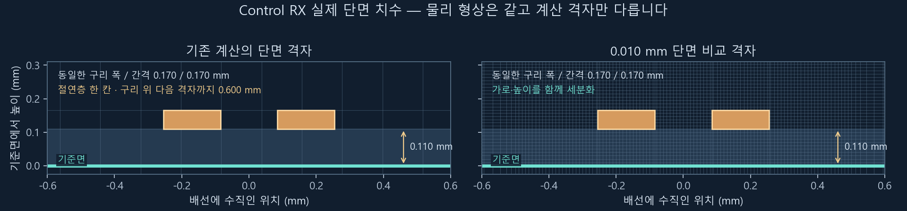
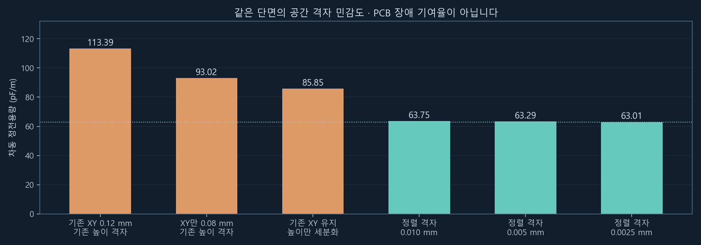
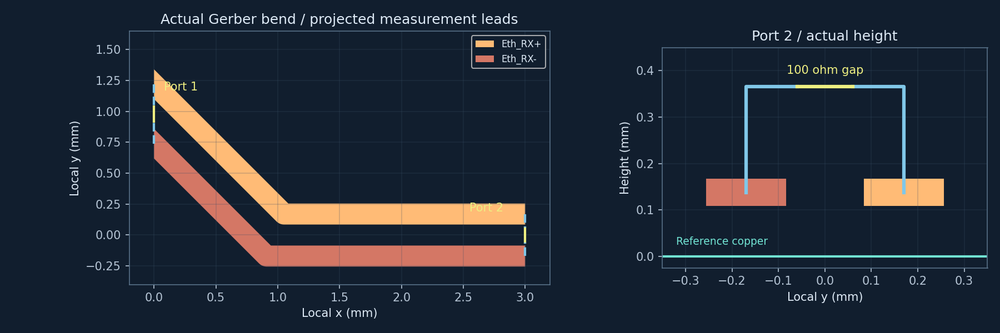
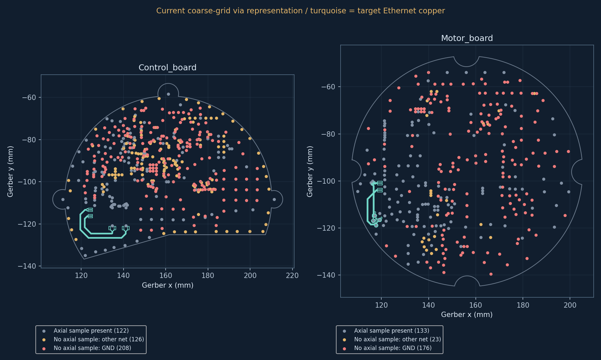
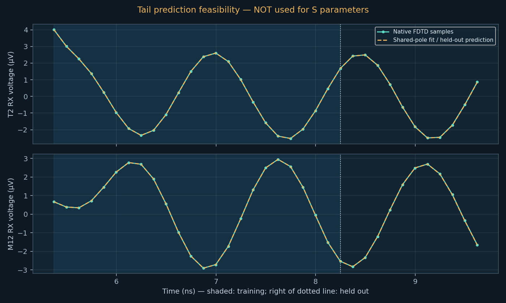
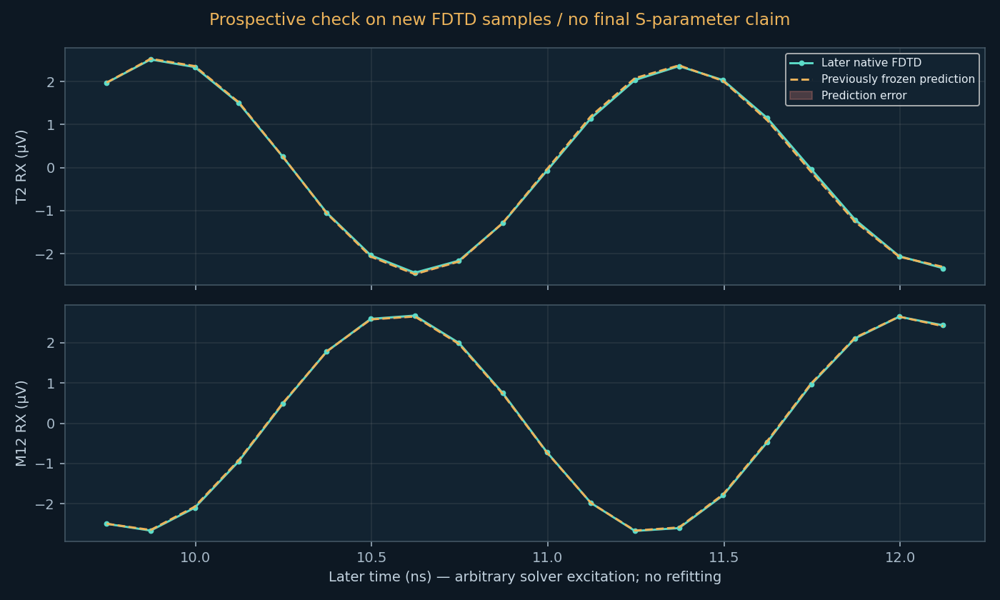

RX NUMERICAL STABILITY
RX 안정화 검증
새 전체 모델 · 100 MHz: 반사손실 20.42 dB / 삽입손실 0.040 dB. 원래 방정식의 계산 오차와 수동성 검사를 통과했습니다. 전체 수렴을 확정하려면 격자·경계·포트 조건의 추가 비교가 필요합니다.
기존 모델 반사손실 · 100 MHz19.77 dB기존 모델 삽입손실 · 100 MHz0.049 dB시간 안정성 / 공간 정확도통과 / 재검증
수치의 의미: 이 모델의 100 MHz 입력 전력 중 약 1.05%가 입력으로 반사되고, 약 98.88%가 목표 출력으로 전달됩니다. 계산된 전달 손실은 작습니다. 지금 확인하려는 것은 얇은 구리와 절연층을 더 정확히 표현한 격자에서도 이 결론이 유지되는지입니다.
기록을 늘린 뒤에도 최대 반사손실 차이 0.380 dB, 삽입손실 차이 0.0096 dB로 목표 0.5 / 0.05 dB 이내였습니다.
손실 없는 도체·FR-4와 커넥터 근사를 사용한 기본 모델의 값입니다. 실제 구리 저항·유전체 손실 및 최종 PCB 판정은 이 수치와 구분합니다.
현재 진행: 전체 두 보드의 새 계산 모델
전체 경로의 새 전자장 계산 완료 · 격자·경계 비교 필요
| 확인 항목 | 현재 결과 |
|---|
| T2 → 64핀 커넥터 → Motor 비아 → M12, 각 RX 도체 연결 | 연속 도체 확인 · 두 선 간 단락 없음 |
| 측정 포트의 구리 우회 경로 | 4개 포트 모두 구리와 겹치지 않음 |
| Gerber 전체 윤곽 보존 | 739개 구리 영역 유지 · 원본과의 차이 5 µm 이내 확인 |
| 전체 재료 경계 격자 | 62,603개 면 모두 포함 · 1,660,942개 삼각형 · 경계 폐쇄·방향 검사 통과 |
| 전체 체적 격자 | 2,306,103개 요소 · 모든 요소의 부피·재료·경계 연결 검사 통과 |
| 새 모델의 전체 경로 RL / IL | 새 계산값 있음 · 아래 수치 및 검증 상태 참고 |
100 MHz 전력 흐름: M12까지 전달 99.09% · T2 쪽으로 반사 0.91%
새 전체 모델 · 100 MHz
| 입력 방향 | 반사손실 | 입력으로 반사된 전력 | 상대편까지 삽입손실 |
|---|
| T2 → M12 | 20.42 dB | 0.907% | 0.040 dB |
| M12 → T2 | 20.42 dB | 0.907% | 0.040 dB |
반사 전력의 비율이며 실제 링크 장애의 원인 비중을 뜻하지 않습니다. 위 표는 한 격자 모델의 값이며, 전체 수렴 확정 여부는 아래 비교와 추가 경계·포트 검증으로 구분합니다.
같은 전체 PCB 형상 · 격자 비교
| 100 MHz | 기본 격자 | 촘촘한 격자 |
|---|
| 반사손실 | 19.74 dB | 20.42 dB |
| 삽입손실 | 0.046 dB | 0.040 dB |
| 반사 전력 | 1.06 % | 0.91 % |
반사손실 차이 0.69 dB: 목표 0.5 dB에는 아직 미달합니다. 삽입손실 차이 0.0068 dB는 목표 0.05 dB 이내입니다. 반사 전력 차이는 약 0.16%p로, 두 계산 모두 이 근사 모델의 수동 PCB 경로에서 큰 전송 손실을 보이지 않습니다. 실제 노이즈 내성이나 링크 장애 원인 비중을 검증한 결과는 아닙니다.
두 보드의 모든 Gerber 구리, 도금 비아 788개, 64개 접점을 넣은 전체 체적 격자를 확보했습니다. 이 격자로 우선 100 MHz의 전자장을 계산합니다. 새 수치가 나온 뒤 격자·경계·포트 조건을 비교해야 수치 안정성을 판정할 수 있습니다.
격자 생성을 막던 두 경계 문제를 확인했습니다. Motor 보드에서는 같은 도체의 교차 경계를, Control 보드에서는 같은 VDDCR 전원 영역의 2.14 mm 중복 경계를 정리했습니다. 739개 원본 구리 영역이 모두 포함되며, 각 층의 구리 형상을 원본과 대조해 5 µm 이내 차이를 확인했습니다. 전체 모델에 적용한 해석용 형상 정리이며 PCB 불량을 발견했다는 뜻은 아닙니다.
새 해석기의 작은 RX 굴곡 1–100 MHz 교차 검증: 설정한 수치 기준 통과. 이 결과를 전체 PCB 손실값으로 사용하지 않습니다.
전체 모델 진행 데이터 · 해석기 검증 근거
기존 약 20 dB 값의 격자 문제 · 확인 근거
약 20 dB를 확정하기 전에 발견한 계산 문제
기존 격자의 정확도에 문제가 있어 장시간 비교 계산을 일시정지했습니다.
실제 Gerber에서 Control RX의 폭·간격 0.17 / 0.17 mm인 단면을 골라 확인했습니다.
기존 모델은 배선 아래 0.11 mm 절연층을 한 칸으로 표현하고, 배선 위 첫 공기 칸은 0.60 mm입니다.

단면의 정전용량은 선로가 전하와 전기장을 저장하는 정도를 나타냅니다.
같은 형상을 기존 격자로 계산하면 113.4 pF/m, 세분화하면 63.0 pF/m였습니다.
openEMS 내부의 실제 전기장 계산 계수로도 이 차이를 확인했습니다.
따라서 시간을 더 길게 계산하는 것만으로 이 오차를 없앨 수는 없습니다.
단면 비교 수치와 검증 근거

마지막 0.005 → 0.0025 mm 세분화의 정전용량 차이는 0.44%였습니다.
0.005 mm 격자에서 외곽 범위를 4 → 8 mm로 늘린 차이는 0.00013%였습니다.
이는 단면 계산의 비교 결과이며 전체 경로 반사손실의 오차 한계는 아닙니다.
검증 방법: 유한체적 정전계 풀이를 두 유전체 평행판의 해석식과 대조하고,
설치된 openEMS로 작은 단면 연산자만 생성해 도체 격자점과 전기장 계수를 대조했습니다.
확인한 6개 조건 모두 통과했습니다. 이 단면 점검은 시간 전개 없이 수행했습니다.
이상적인 연속 기준면을 사용한 균일 단면 진단입니다. 주변 같은 층 구리, 굴곡, 비아, 커넥터와 다른 보드는 제외했습니다.
PCB 실물의 정전용량·임피던스 측정이나 제조 불량 판정이 아닙니다.
현재 판단과 native 대조 데이터 ·
단면 원시 비교 수치 ·
사용 버전의 openEMS 계산 소스
이 진단 이후 실제 RX 굴곡과 측정 포트를 포함한 작은 3D 모델의 시간·격자 검증을 완료했습니다.
전체 경로는 별도의 형상에 맞춘 FEM 격자로 준비 중이며, 현재 단계는 위 진행 표에 표시합니다.
기존 20 dB를 기준으로 PCB 합격·불합격을 정하지 않습니다.
작은 Gerber 굴곡: 시간·격자·포트 검증 완료
Gerber의 Control RX 굴곡을 x 방향 3 mm 범위로 잘라, 두 RX 도체와 아래 In2 구리를 계산합니다. 전체 Control–Molex–Motor–M12 경로의 손실을 뜻하지 않습니다.

두 모델의 구리 형상과 측정 위치는 같으며, 가로와 높이 방향의 격자를 함께 줄여 비교합니다. 다른 신호·하부 층·비아·커넥터는 이 작은 검증 모델에서 제외했습니다.
PCB 구리와 겹치는 직접 포트는 저항 일부가 구리로 우회되는 문제가 확인됐습니다. 수정본은 구리 밖의 측정용 도체와 포트를 사용하며, 우회 경로를 포함한 내부 계수 검사에서 양쪽 100 Ω을 확인했습니다. 측정용 도체의 기생성분은 포함합니다.
0.04 / 0.02 mm 격자 · 0.35백만 셀 · 계산 완료 · 계산 시간 1.984 ns
이 작은 구간만의 100 MHz 값: RL 59.33 dB / IL 0.0008 dB. 시간·파형 추출·전력·종단 검사는 통과했으며 격자 비교는 별도 확인합니다.
0.02 / 0.01 mm 격자 · 1.73백만 셀 · 계산 완료 · 계산 시간 1.999 ns
이 작은 구간만의 100 MHz 값: RL 64.21 dB / IL 0.0006 dB. 시간·파형 추출·전력·종단 검사는 통과했으며 격자 비교는 별도 확인합니다.
두 작은 모델의 격자 비교: 설정한 수치 기준 통과. 전체 경로의 수렴 판정은 별도로 남습니다.
반사가 매우 작은 구간이므로 반사계수의 복소수 차이로 평가했습니다. 최대 ΔΓ 0.000466 / 기준 0.005, 최대 삽입손실 차이 0.000146 dB / 기준 0.05 dB. 큰 RL dB 값 자체가 정밀하게 일치한다는 뜻은 아닙니다.
작은 모델의 현재 상태와 검증 데이터 · 29개 단면 격자 비교
계산이 오래 걸린 이유와 다음 해석 방식
전체 Cartesian 격자에 같은 세분화를 적용하면 약 2.50억 셀입니다. 작은 모델의 측정 속도와 낙관적인 시간 간격을 적용해도 2 ns 계산에 약 29시간으로 추정됩니다. 전체 보드의 실제 완료 시간을 보장하는 값은 아니며, 해당 대형 계산은 시작하지 않았습니다.
대안으로 같은 작은 Gerber 구간에 NGSolve 주파수 해석을 시험했습니다. 형상에 맞는 사면체 격자를 사용하며, 100 MHz 한 점은 낮은 차수에서 약 11–12초, 높은 차수에서 약 100초였습니다. openEMS의 위 실행은 한 시간 기록으로 1–100 MHz 대역을 구하므로, 이 시간을 전체 대역 계산 시간과 직접 비교하면 안 됩니다.
초기 1 MHz·100 MHz 점과 100 MHz 격자·차수 변경 비교는 설정한 수치 오차 기준을 통과했습니다. 이후 일반 해석기의 1–100 MHz 검증은 위 전체 모델 진행 표와 별도 근거 파일에 표시합니다. 두 검증 모두 작은 굴곡에 한정되며, FEM의 유한 면적 저항 포트와 PML 표현 차이를 포함합니다.
다음 전체 형상 입력에는 두 보드의 모든 Gerber 구리, 드릴·도금 비아, 64개 접점 및 기존 측정 도체를 준비했습니다. 실제 전체 FEM 격자와 계산량을 먼저 확인하고, 접속·포트·경계·격자 검사를 이어갑니다.
실제 RX 경로 및 계산량 추정 · 작은 모델의 FEM 비교
계산 범위·파형 처리·검증 근거
1–100 MHz에서 시간·격자 변경에 따른 반사손실 변화 0.5 dB 이내, 삽입손실 변화 0.05 dB 이내를 목표로 계산 중입니다. 반사가 매우 작은 지점은 복소 반사계수 차이 0.005 이내로 확인합니다.
입력 펄스 폭 0.6 ns · 중심 3 ns · 기본 기록 16 ns / 확장 기록 24 ns · PML 경계 · 경계 거리도 별도로 비교 · 실제 거버와 같은 커넥터 근사 유지
여기서 반사손실은 T2 케이블측 패드에서 본 값이고, 전달 방향은 T2 → Molex 64핀 → M12 PCB 패드입니다. RX 네트 한 쌍을 구동하고 나머지 세 차동 포트는 100 Ω으로 종단합니다.
진행 상태의 에너지 dB는 계산 공간에 남은 전체 에너지의 지표입니다. 선로의 반사손실·삽입손실은 각 측정 포트의 파형에서 별도로 계산합니다.
표와 선로 그래프는 모든 입력·출력 전압·전류에 동일한 인과적 적분과 32단 평활 필터를 적용한 결과입니다. 24·32·40단 세 조건과 모든 시간 창의 교차 비교도 통과해야 시간 검증을 인정합니다. 원래 입력 펄스와 물리 모델은 그대로이며, 예측한 미래 파형은 사용하지 않습니다.
기본 모델에서 처리 조건을 고정한 후 기록을 14.622 ns에서 15.996 ns로 늘려, 새 실제 샘플 11개까지 추가 검증했습니다. 모든 이전·이후 시간 창과 새 기록 끝점의 1596개 비교에서 최대 반사손실 차이 0.380 dB, 삽입손실 차이 0.0096 dB였습니다. 후속 검증 데이터
현재 모델은 PEC 도체와 손실 없는 FR-4를 사용합니다. 삽입손실에는 반사·다른 포트로의 결합 등이 반영되지만, 실제 구리 저항과 유전체의 손실은 포함하지 않습니다. 실제 커넥터 내부와 측정용 연결선도 근사되어 있습니다.
기본 RX 계산은 완료됐습니다. XY 세분화·경계 확대·원거리 비아 보완의 세 비교 계산은 모두 상태를 보존한 채 일시정지했습니다. 높이 방향을 포함한 격자 정확도 점검을 먼저 진행합니다.
계산 격자의 비아 표현 점검 · 추가 비교 필요
현재 격자에서 먼 비아의 수직 도체가 일부 표현되지 않는 것을 확인했습니다. 아래 수는 계산 모델의 상태입니다. 신호선 주변 29개 주요 비아는 모두 표현되어 있으며, 기본 격자의 GND 누락 지점은 신호선에서 5.08 mm 이상 떨어져 있습니다. 원거리 비아를 연결한 모델과의 비교도 최종 검증에 포함합니다.
| 모델 | 도금 구멍 전체 | 수직 도체 격자점 없음 | 그중 GND |
|---|
| 기본 격자 · 0.12 mm | 788 | 533 | 384 |
| 세밀한 격자 · 0.08 mm | 788 | 491 | 356 |
| 경계 거리 확대 · 8 mm 추가 / 24 ns 기록 | 788 | 533 | 384 |
점검: openEMS가 PEC를 지정하는 실제 Yee 격자 위치와 비아 도금 단면을 대조했습니다. 원거리 비아를 금속 원기둥으로 근사한 비교 모델은 수직 연결과 각 층의 구리 접촉 검사를 통과했습니다. 실행 상태는 아래에 표시합니다. 이 비교에는 비아 내부의 금속 채움과 추가 격자선의 효과가 함께 들어갑니다. 비아 수를 실제 장애 기여율로 해석하지 않습니다.

비아 점검 데이터 · openEMS PEC 처리 소스
기본 격자 · 0.12 mm
계산 종료 · 검증 중 · 21.6백만 셀 · 16.00 / 16 ns · 에너지 -19.0 dB
현재 기록의 100 MHz 값: 반사손실 19.77 dB · 삽입손실 0.049 dB. 시간 검증: 통과, RX 입력의 출력 전력 합 점검: 통과.
100 Ω 종단 포트 검사: 통과 · 수동 종단에서 남는 입사 성분 / 구동 입력의 최대 비율 0.0032% (1–100 MHz, 모든 시간 창; 분석용 기준 0.1% 이내).
| 기록 종료 | 반사손실 @100 MHz | 삽입손실 @100 MHz |
|---|
| 11.866 ns | 19.81 dB | 0.043 dB |
| 13.586 ns | 19.80 dB | 0.046 dB |
| 14.926 ns | 19.79 dB | 0.048 dB |
| 15.996 ns | 19.77 dB | 0.049 dB |
시간·공통 처리 조건 66개 비교: 최대 반사손실 차이 0.296 dB, 삽입손실 차이 0.0082 dB. 반사 영점 부근 복소 반사계수 차이 0.00087.
처리 전 원파형의 직접 DFT · 비교용
100 MHz 반사손실 19.734 dB, 삽입손실 0.1228 dB. 유한 기록의 잔류 진동에 민감한 원래 추출 값입니다. 원래 파일과 native CalcPort 대조는 보존합니다.
원파형 native DFT 대조: 통과 · 공통 처리 후 native CalcPort 대조: 통과
세밀한 격자 · 0.08 mm
일시정지 · 계산 상태 보존 · 33.9백만 셀 · 0.62 / 16 ns · 에너지 -0.0 dB
입력 펄스가 아직 진행 중입니다. 이때의 에너지 0 dB는 수렴 실패를 뜻하지 않습니다. 입력이 지나간 뒤 잔류 파형과 결과 변화로 확인합니다.
시작 후 경과 25시간 26분 (일시정지 시간 포함) · 일시정지 상태 보존
경계 거리 확대 · 8 mm 추가 / 24 ns 기록
일시정지 · 계산 상태 보존 · 32.2백만 셀 · 2.62 / 24 ns · 에너지 -0.0 dB
입력 펄스가 아직 진행 중입니다. 이때의 에너지 0 dB는 수렴 실패를 뜻하지 않습니다. 입력이 지나간 뒤 잔류 파형과 결과 변화로 확인합니다.
시작 후 경과 24시간 18분 (일시정지 시간 포함) · 일시정지 상태 보존
원거리 비아 연결 보정 · 788개 수직 연결 확인
일시정지 · 계산 상태 보존 · 29.8백만 셀 · 2.87 / 16 ns · 에너지 -0.21 dB
입력 펄스가 아직 진행 중입니다. 이때의 에너지 0 dB는 수렴 실패를 뜻하지 않습니다. 입력이 지나간 뒤 잔류 파형과 결과 변화로 확인합니다.
시작 후 경과 20시간 46분 (일시정지 시간 포함) · 일시정지 상태 보존

계산 시간 단축 검토 · 잔류 파형 예측은 아직 미채택
실제 계산 기록 9.623 ns 중 앞부분으로 감쇠 진동 모델을 만들고, 학습에서 제외한 뒤쪽 파형과 비교했습니다. Matrix pencil 방법의 적용 가능성을 확인한 별도 진단입니다.
유효한 21개 설정 중 7개만 모든 진동이 감쇠하는 모델을 만들었습니다. 그림은 그중 보류 구간의 주파수 오차가 가장 작은 설정입니다. 이 선택에는 보류 구간을 사용했으므로, 추가로 계산될 파형에 대한 독립 검증은 남아 있습니다.

세로축의 µV는 계산용 입력 크기에 따른 시뮬레이션 전압입니다. 실제 이더넷 신호나 현장 노이즈를 측정한 전압으로 해석하지 않습니다. 오차는 동일 계산의 입력 성분을 기준으로 정규화했습니다.
그 설정에서도 보류 구간의 출력 파형 예측 오차를 주파수로 변환하면, 1 MHz에서 입력 성분 대비 최대 1.23%가 남습니다. 이는 진폭 오차의 비율이며, 반사 전력이나 실제 통신 장애율을 뜻하지 않습니다. 짧은 구간의 일치로 아직 계산하지 않은 전체 잔류 파형의 정확성을 보장할 수 없습니다.
현재 S-파라미터는 실제 계산 기록에서만 추출합니다. 예측 샘플이나 감쇠 강제 보정은 반영하지 않았습니다.
진단 결과 · Adve 등, 전자기장 시간 응답의 Matrix pencil 외삽 연구
새로 계산된 파형으로 추가 검증
위 예측을 만든 뒤 실제 FDTD 기록이 12.122 ns까지 진행됐습니다. 기존 예측 계수를 그대로 두고, 당시 없었던 9.748 ns 이후 20개 새 샘플과 비교했습니다. 원래 기록의 일치도 확인했습니다.

그림은 RX 전압 두 개입니다. 아래 RMS 오차는 네 포트의 전압과 100 Ω × 전류를 함께 비교한 값이며, 주파수 영역의 수치도 네 포트의 전압·전류를 모두 사용합니다.
선택해 둔 예측의 새 구간 파형 RMS 오차는 해당 구간의 실제 파형 대비 4.77%였습니다. 새 구간만 예측으로 대체해 따로 계산한 경우, 실제 기록으로 계산한 경우와 반사손실 최대 0.344 dB, 삽입손실 최대 0.059 dB 차이가 났습니다. 이 새 구간의 비교는 설정한 수치 기준을 통과하지 못했습니다. 삽입손실 차이가 목표 0.05 dB를 초과했습니다.
이는 새 구간에 대한 예측 오차의 검증입니다. 아직 계산하지 않은 전체 잔류 파형의 정확도나 원래 S-파라미터의 수렴을 증명하지 않습니다. 현재 예측을 이용한 조기 종료는 채택하지 않습니다.
예측 계수를 고정한 추가 검증 데이터
기록을 길게 했을 때 수치가 변하는 모습
동일한 형상에서 실제 계산 기록의 끝을 한 샘플씩 늘린 결과입니다. 각 기록의 실제 샘플에 동일한 32단 공통 처리를 적용했습니다. 미래 샘플은 사용하지 않습니다. 100 MHz와 1 MHz의 반사손실, 100 MHz의 삽입손실, 전체 대역의 최대 출력 전력 합을 표시합니다. 이 변화는 PCB를 변경한 효과가 아닙니다.

실제 계산된 입력·출력 시간 파형
계산용 펄스에 대한 각 포트의 전압입니다. 각 모델에서 T2 RX 전압의 최대 절댓값을 1로 두고 네 파형에 같은 배율을 적용했습니다. 계산 진행 중인 기록은 계속 갱신됩니다.
기본 격자 · 0.12 mm

경계 거리 확대 · 8 mm 추가 / 24 ns 기록

원거리 비아 연결 보정 · 788개 수직 연결 확인

목표 진행 중입니다. 현재 수치를 확정 결과로 사용하지 않습니다. 시간, 격자, 외곽 경계의 비교를 확인한 뒤 판단을 업데이트합니다.
안정화 검증 데이터